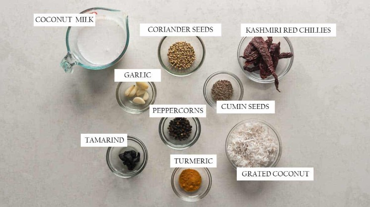

- spices :
- Coriander seeds, cumin seeds, peppercorns, turmeric are all the spices you need for the ground masala for flavour and fragrance
- Souring Agent : I use tamarind which is most easily available. Sub with 1 teaspoon tamarind paste. Kokum is another great alternative that's most popular in Goan cuisine - use 2 pieces of kokum instead of tamarind
- Coconut : Both freshly grated coconut as well as coconut milk. This is not traditional in some
recipes of Ambot Tik but it's how the recipe was given to me, and I also love the body that it creates
for the gravy.
Garlicbecause every good gravy needs garlic and I truly believe that - Chilies : Kashmiri Red Chillies for that distinct orange colour and a mild heat
All of this is ground to paste in a blender till its really smooth.
Once this ground paste is ready, you'll need a few more ingredients: - Coconut Oilbecause most coastal recipes are incomplete without it, and it adds a distinct flavour
that elevates the curry. You can use any other neutral flavoured oil to replace it. Stay away from olive
oil for this though! A good substitute is ghee.
Curry Leavesare essential as a herb. If you don't have access to fresh, try to source dried curry leaves and double the amount - Prawns : While you can use any size of prawns with this recipe, we used deveined and cleaned Jumbo Prawns or Shrimp because we love digging into them. But you can easily use small or medium sized prawns if that's what you have. This recipe also works really well with Fish if you are in the mood for some Goan Fish Curry.
Here are the main ingredients you'll need for this ground masala


FROZEN VS FRESH PRAWNS
When working with seafood, if you don't live on the coast, it's always better to use frozen prawns vs.
fresh prawns because that's fresher than fresh. While using frozen prawns, check out my tips to defrost
prawns safely - these work for any kind of seafood.
Since prawns defrost pretty quickly (about 15-20 minutes), you can get everything else ready - grind the
masala, cook the onion, tomato mixture etc. while the prawns defrost so that you have this prawn curry
on the table in about 30 minutes!
STEP BY STEP RECIPE

- Add all the ingredients for the ground masala into a blender. You can add a little water if required but the coconut milk takes care of the liquid component
- Grind to a smooth paste. You'll see the paste changing colour and turning to a deep orange
- To make the gravy, start by sauteing ginger and onions in coconut oil till the onions turn translucent
- Add the tomatoes and salt and cook them till tomatoes become soft and pulpy
- Pour the ground curry paste along with about a cup of water. You can add the water to the grinder and swirl it to get any remnants of the curry paste
- Bring it to a quick boil and then cover and simmer for 10 minutes till you see oil floating to the top
- Once the gravy has boiled well, add the deveined and cleaned prawns
- Add curry leaves at this stage to keep their aroma fresh
- Mix and bring the curry to a quick boil
- Only 5-7 minutes of simmering and the prawn curry is ready to serve!


TOP TIPS TO MAKE THIS CURRY AMAZING!
- Make sure to grind the paste till its smooth. Use a high powered blender and add a little more water if you need. If it's gritty it won't taste great
- Use freshly grated coconut. If you don't have access to it, look 'freshly grated frozen coconut'. Fresh is different from dessicated coconut and they cant be substituted
- Make sure to simmer the curry base for at least 10 minutes or it'll taste raw
- Prawns cook really quickly. 7-8 minutes for jumbo prawns is enough, 4-5 minutes for medium prawns and just 2-3 minutes for small prawns